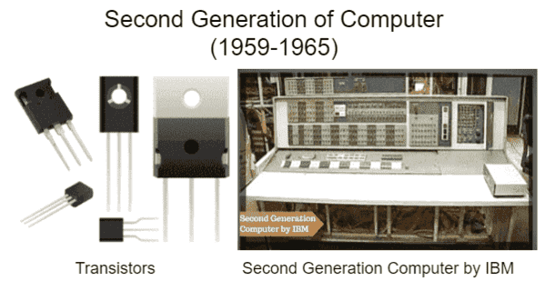
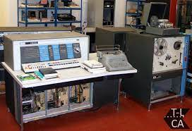
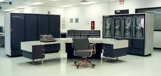

SECOND GENERATION COMPUTERS...!!
- The period of second generation was from 1959-1965.
- In this generation, transistors were used that were cheaper, consumed less power, more compact in size, more reliable and faster than the first-generation machines made of vacuum tubes.
- In this generation, magnetic cores were used as the primary memory and magnetic tape and magnetic disks as secondary storage devices.
- In this generation, assembly language and high-level programming languages like FORTRAN, COBOL were used.
- The computers used batch processing and multiprogramming operating system.
- Eg. IBM-1620,
IBM-7094,
CDC-1604,
CDC-3600,
UNIVAC-1108, etc.



Advantages :
- The size of these computers reduced considerably.
- They were very fast as compared to first generation computers.
- Computers of these generation were very much reliable than that of first generation computers.
Disadvantages :
- The computers of these generation got over heated quickly.
- Also these types of computers had a maintenance problem.
For more info click :